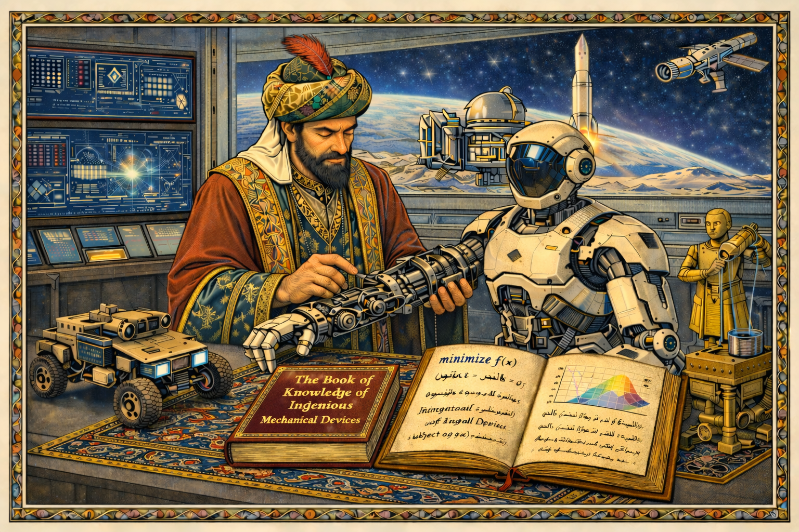

Autonomous Control, Optimization and Robotics (CORTx) Lab
Welcome to the Autonomous Control, Optimization, and Robotics (CORTx) Lab
(yes, pronounced “cortex” 🧠😄)
Let’s face it: real-world autonomy is hard.
Autonomous systems must operate under uncertainty, resource limitations, safety constraints and dynamic environments -- often simultaneously.
At the CORTx Lab, we develop the mathematical foundations and algorithms
underlying safe, intelligent, and adaptive autonomous and robotic systems, through principled control and learning frameworks.
Our research integrates control theory, optimization, and artificial intelligence to create scalable frameworks with applications spanning
robotics, transportation, energy, and industrial systems.
Location: Building 22, room 321, King Fahd University of Petroleum and Minerals (KFUPM)
|